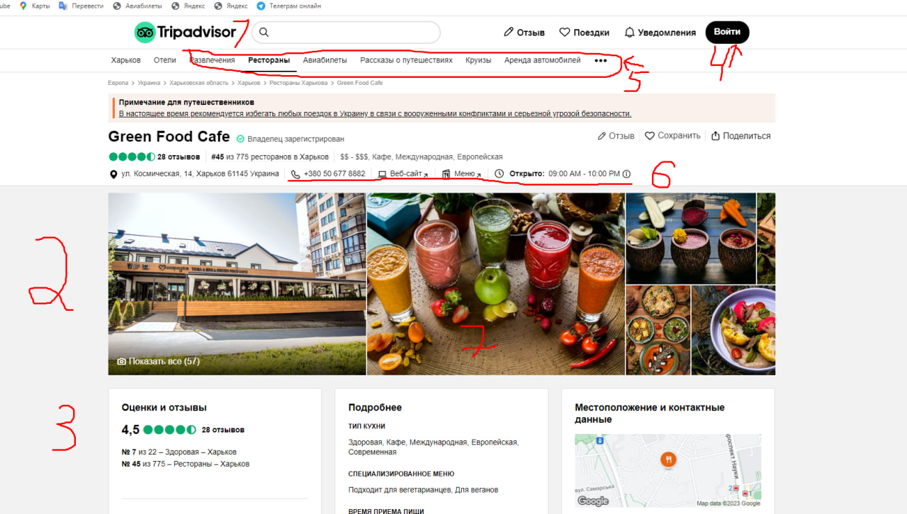

Опишіть можливий майбутній проєкт, який буде цікавим і головне — матиме комерційну перспективу
Незвичні кафе-ресторани у вашому місці
- 1. Яку проблему вирішуємо? (1 пропозиція)
- 2. Як вирішуємо основну проблему? (послідовність дій)
- 3. Яка структура проєкту? (список сторінок / екранів проєкту, наприклад)
- 4. Як буде виглядати інтерфейс проєкту? (приблизний опис)
- 5. Опишіть функціонал проєкту (на прототипі вказати цифрами основні функційні елементи. Скласти нумерований список, у якому кожен пункт є описом функційного елементу, зазначеного цифрою на прототипі, коротко і приблизно)
- 6. Створення MVP (опишіть ту функційність проєкту, при реалізації якої він уже буде давати результат, але витрати на його реалізацію будуть мінімальними)
- 7. Опишіть послідовність реалізації проєкту (список функцій, які будуть втілені після реалізації MVP)
1
У наш час, але багатьом людям не вистачає позитивних емоцій. Стандарнтні кафе та ресторани вирішують проблему пустого шлунку, але не вирішують проблему отримання позитивних емоцій.
2
Мій сайт, буде вирішенням двух проблем (пустий шлунок, та відсутніть позитивних емоцій), так як людина зможе відвідати незвичний заклад, наприклад(кафе зі котами) та отримати позитинвні емоціїї від нього, та ще і наїстися. Це ж така радість, коли ті підкармлюєш кота, та бачиш його счастливі очі
3
Головна сторінка з навігаційним меню, у якому будуть відображені наступні сторінки:
- 1. Головна сторінка
- 2. Кафе та ресторани
- 3. Кафе та ресторани 18+
- 4. Бонуси та знижки
- 5. Партнери
- 6. Про нас
- 7. Контакти
- 1. На головній сторінці будуть відображатися фото наших кліентів з закладів, наші пропозиції для дітей та дорослих, найвигідніші пропозицї цього тижня
- 2. На сторінці кафе та ресторани - буде інформація про відкриті заклади вашого міста, та буде розділ "найцікавіше цього тижня"
- 3. На сторінці Бонуси та знижки, буде інформація про всі знижки цього місяця, тижня та дня
- 4. На сторінці партнери, буду відображенні наші партнери з якими ми співпрацюємо
- 5. На сторінці про нас, буде інформація про наші офіси, місцезнаходження та вакансії, які у нас відкриті
- 6. На сторінці контакти, буде інформація про посилання на наші сторінки у соц мережах, так контактні данні у наш call center
4
Бекграунд навігації буде біло-поморанчевий з додаванням linear-gradient. Усі кнопки навігації будуть синьо-білі, та будуть мінять яскравість при наведені.
Бекграунд хедеру буде білого кольору
На сайті будет багато анімації, слайдер з фото наших кліентів у закладах, інтерактиви при скролі сайту. Підвал/футер проекту, буде у темних тонах, з відображенням посилань на інші сторінки сайту, та на задньому фото будет перший заклад з яким ми почали співпрацювати. Також, інколи кліента буде супроводжувати коротенькі відео знятих у закладах.image.png
5

- 1. Поиск названия заведения. Добавялем в базу данных все названия заведени и присваеваем. Если при поиске, будет совпаднея с данными из БД, то пользователю отобразиться страница с нужным заведением
- 2. Скроллбар, с помощью него можно пролистывать фото в по оси (x)
- 3. В оценки и отзывы клиенты добавляют свои отзывы, на основе которых выводится рейтинг. Можно реализовать с помощью JS + React
- 4. Вход в личный кабинет, осуществляеться с помощью JS(праверка валидации) PHP(можем подлючится к базе данных myADMIN) myADMIN(в которой находятся данные пользователя) если при входе в личный кабинет, в базе данных есть совпадения логина и пароль, то клиент будет авторизован и его перекинет обратно на главную страницу с помощью PHP
- 5. Ссылки на другие страницы сайта. Создаем новые страницы HTML документа, на которые мы даем ссылку, чтобы можно было перескакивать со страницы на страницу
- 6. Пишем контактные данные с помощью ссылки () и указываем ссылку на которую нужно нам перейти
- 7. Можем увеличивать фото, и при этом задний фон будет затемняться, но это не помешает нам скролить по сайту. Можем сделать с помощью слайдера
6
Дизайнер сделает дизайн для проекта в фигме. Разработчик сделать верстку+адаптив+пропишет минимальную логику, бекендер создаст бесплатную серверную Базу данных, и будет туда заносить данные пользователей, + настроит форму опплаты + настроит звонок в наш кулл центр. Используем бесплатный хостинг для сайта, разместим рекламу и протестируем наш функционал
7
После mvp начнем работать с githab и фигмой, чтобы у всех участников команды была возможность отслеживать в реальном времени работу других членов команды. Будем работать по методологи BEM, SCRAM, так как эти методолигии используються повсеместно, и значительно ускоряют работу. Проджект менеджер будет проверять провижение проекта - Ежедневно. Нужно найти людей, который смогут заменить учатников проекта, в случае форс-мажора. Нужно будет вложится в дедлайны. На каждом создании инкремента, нужно тестировать его на наличие ошибок. При финале проекта, нужно отправить проект на бетта и альфа тестирование. И как только проект получит одобрение со стороны всей команды тестировщиков, программистов и проджект менеджера, тогда можна релизить проект + сразу создать оналайн поддержку, на случай того, если клиенты найдут баги, чтобы мы сразу получили обратную связь и исправили эти баги